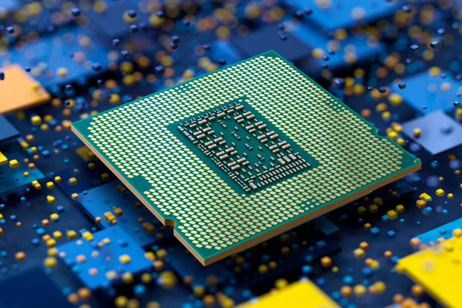

CPU
Ik moest voor informatica verdiepen in een specifiek onderwerp wat te maken had met het drielagenmodel, en dat heb ik gedaan! Na veel rondgekeken te hebben ben ik mij uiteindelijk gaan verdiepen in een CPU. Hoe werkt zo'n CPU nou? Nadat je deze pagina hebt gelezen ben jij een echte proffesioneel op het gebied van een CPU!
Een CPU (Central Processing Unit) is de kern van elke computer en is verantwoordelijk voor het uitvoeren van opdrachten. Het vormt in feite de "hersenen" van het systeem, en naarmate je de werking van een CPU beter snapt, krijg je een dieper begrip van hoe computers nou echt functioneren.
De CPU geeft instructies die zijn geprogrammeerd in de vorm van machinecodes. Deze instructies worden zijn van afkomst vanuit RAM en worden behandeld door middel van de fetch-decode-execute cyclus. In de fetch-fase verzamelt de CPU instructies uit zijn geheugen. Daarna transformeert de CPU deze instructies in de decode-fase, waarin deze wordt verandert in een vorm die voor de CPU simpel en begrijpbaar is. Als laatst voert de CPU de instructies uit in de uitvoerfase, ook wel de execute-fase genoemd, bijvoorbeeld om een berekeningen uit te voeren.
Een cruciale componente die de prestaties van een CPU kan beïnvloeden, is de kloksnelheid, weergegeven in GHz. Dit betreft het aantal cycli dat een CPU elke seconde kan uitvoeren. Hogere kloksnelheden resulteren in meer uitwerkingen per seconde, maar de efficiëntie van de CPU is nog steeds afhankelijk van andere elementen, zoals het aantal cores en de architectuur.
Een cruciale specificatie is ook het aantal 'cores' in een CPU. De huidige CPU's zijn vaak uitgerust met verschillende kernen, wat inhoudt dat ze tegelijkertijd meerdere dingen kunnen doen (ook wel parallelle verwerking). Dit is vooral waardevol voor taken die geoptimaliseerd zijn om in parallelle te werken, zoals games.
De CPU is bovendien uitgerust met diverse cachelagen, waaronder L1, L2 en L3 cache. Deze kleine, zeer snelle 'geheugens' ondersteunen de CPU bij het op snelle wijze toegang ontvangen tot gegevens en instructies die vaak worden gebruikt. Naarmate hoe groot de cache, hoeft de CPU steeds minder vaak te steunen op het relatief langzame RAM-geheugen, wat de prestaties ten goede zal komen.
Een ander belangrijke uitvinding is de introductie van 'hyper-threading', een technologie die door bedrijven zoals Intel wordt gebruikt. Elke fysieke kern wordt hierdoor in twee virtuele kernen verdeeld, waardoor de CPU tegelijkertijd meer taken zal gaan uitvoeren zonder echt extra fysieke kernen aan te schaffen. Dit verbetert de efficiëntie van 'multithreaded' applicaties.
Ook is er de thermische efficiëntie van CPU, die invloed heeft op de hoeveelheid warmte die een processor tijdens het gebruik genereert. Hogere prestaties veroorzaken een stijgende mate aan warmte, waardoor de CPU heel erg afhankelijk is van de koelingssystemen om oververhitting te vermijden. Bepaalde hedendaagse CPU's zijn ook uitgerust met ingebouwde, interne functies zoals thermal throttling, waarbij snelheid van de CPU wordt verlaagd om te voorkomen dat de temperatuur te hoog wordt.
Samenvattend is een CPU een zeer ingewikkeld, maar boeiend aspect van een computersysteem. Door me te verdiepen in de interne werking van de CPU en de diverse technologieën die hierbij betrokken zijn, zoals multi-core architectuur, kloksnelheden, caching en hyperthreading, krijg ik inzicht in de essentie van de prestaties van een computer. Dit begrip ondersteunt het maken van doordachte beslissingen bij het optimaliseren van een CPU voor bepaalde toepassingen.